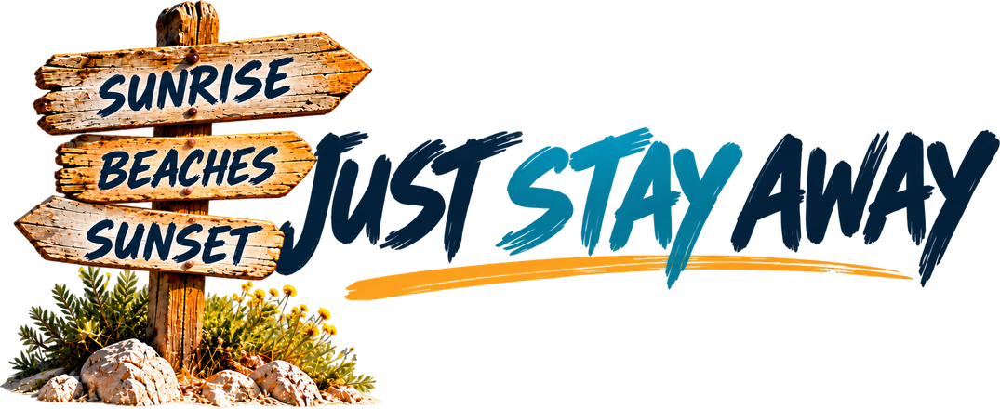

Where the flip flops have been
TRAVEL BLOGS
Every place we've visited, with the videos, blog posts and food in one spot. Start with the map or scroll down.

Drag the map to explore and use + and – to zoom. Tap a pin to see our blogs and videos from there.Map: Mapswire (CC BY 4.0)
the full story
PLACES TO GET LOST IN
- Corfu Old Town
- Ermioni
- Finikounda
- Gythio
- Kassiopi
- Koroni
- Limeni & Oitylo
- Methoni
- Nafplio
- North East Corfu
- Paleokastritsa
- Poros
- Pylos
- Vigklafia & Elafonisos
- Voidokilia Beach
pick a pin on the map to start exploring
{{place.region}}
{{place.name}}
{{place.blurb}}
{{place.countLabel}}
fresh off the road
LATEST BLOG POSTS


our favourite corner
Greece
learned the hard way
See our travel tips →